🎲 Dice Games
Twenty-one dice games keeping scores are supported. You can also make your own dice combinations for your games.
A powerful dice rolling and dice games app for game masters, tabletop gamers, and casual players—delivering faster, smarter game support.
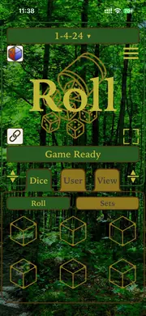
This update supports iOS 27. We have listened to you. This app is packed with many of your requests (and a few surprises).
Twenty-one dice games keeping scores are supported. You can also make your own dice combinations for your games.
Long requested by role-players and wargamers, we now support Dice Pools and Dice Subset Totals so you can roll big, roll boldly, and roll strategically.
Faster, punchier, and way more dramatic. The dice don’t just roll—they perform.
The user interface is updated from your feedback. Results are well centered in the app views for quick feedback of your game actions and rolls.
A range of sleek, stylish themes to match your mood or game-night vibe, including gems, metallic finishes, and premium themes.
Dice sets edited or created on one of your Apple devices sync to your other Apple devices signed in with the same Apple ID.
Dice Shouts delivers periodic notifications featuring dice facts, gaming lore, history, and jokes to keep your tabletop gaming inspiration active, even when the app is closed.
Updated Editor keys (some with swipe actions) are cleaner, smoother, and make it easier to customize your dice sets. Dice set types are now defined in a popover view.
Deeper, richer roll logs with more detail than ever. They can be shared with other apps on your Apple device.
You wanted dice games that follow individual game rules and keep score in the app—now you’ve got them! Twenty-one dice games are supported.
The 3.1 update supports popular tavern games such as Craps, 1-4-24, 6-5-4, Chicago, Going to Boston.
We also have sports games such as Golf and Bowling (ten pin, duck pin and candle pin versions), Draw Poker and even Dreidel are ready to play.
Parlor games of Crystal Ball, Treasure and even Rose Petals are offered in the app.
There are also “push-your-luck” dice games such as Pig and Five Thousand / Ten Thousand.
Dice card games like Poker and Blackjack are offered in the app as seen above.
Just choose a game from the Game Chooser that appears when the app launches, and have fun!
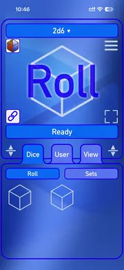
One of the most custom configurable dice apps. A custom dice editor allows you to have up to four different types of dice in a single set. Just type in the dice formula. There are even display options where the dice sum, dice pool count, face count, or even dice sum subset are displayed for your rolls.
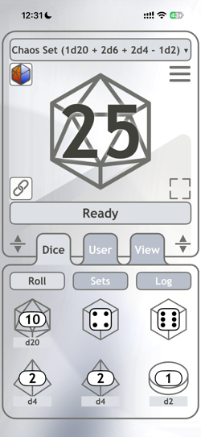
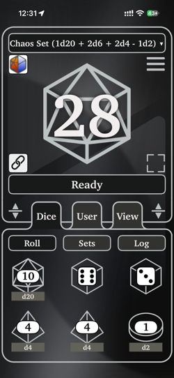
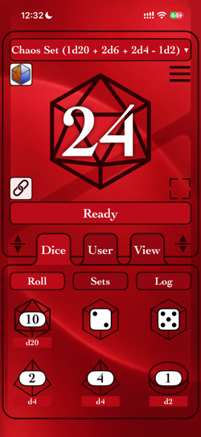
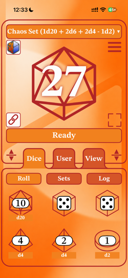
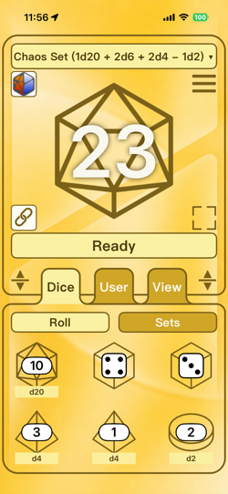
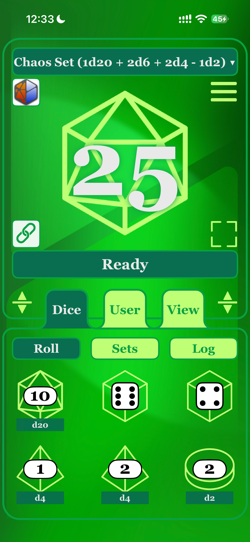
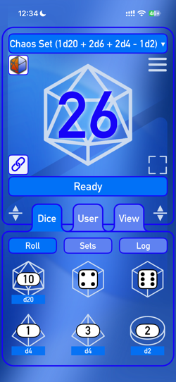
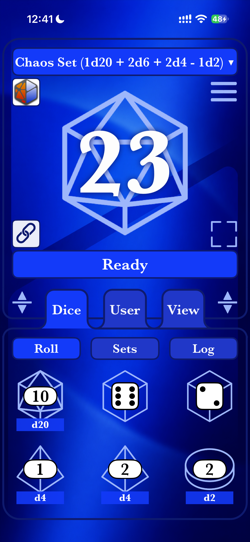
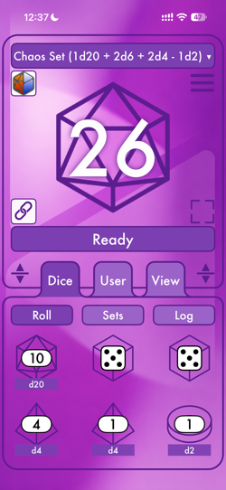
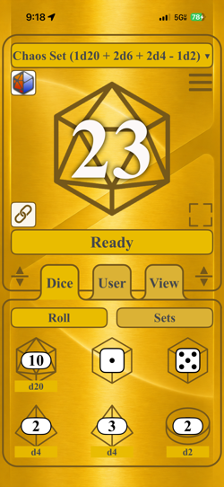
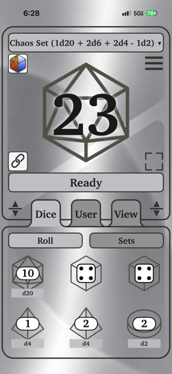
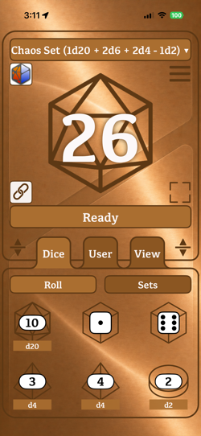
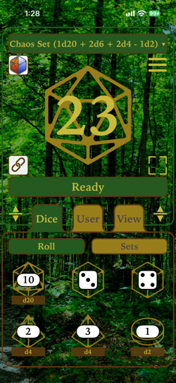
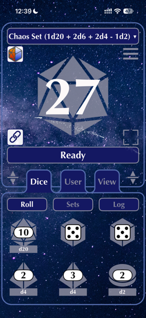
The inevitable "What colors?" discussion came about during app development. We decided on different color options to fit your style. The app offers gem, metal, and premium themes.
Many more different themes are in progress!
What games can I play?
The app is designed for many types of dice games. We currently support the rules and scoring for the following games.
What about common board games and casual dice games?
You can use this app to roll dice for board games and casual dice games. You may need to use the dice set editor to customize a dice set for the game played.
How about classic dice games where dice are rolled from cups?
We found that classic dice games are quite popular. It’s very handy when an establishment does not have dice available.
Are games where you roll the dice, keep some and re-roll the rest supported?
This style of play is supported. You can choose which rolled dice to keep, then reroll only the remaining dice each round. Tap a rolled die and select “Keep” to exclude it from the next roll.
Is this app suitable for tabletop RPG games?
Yes. It’s designed to work with many games that use dice, including RPGs. The app includes a custom dice set editor.
Planning to support other game rules?
We are continually evaluating popular dice games to support. Public interest and input is welcome.
What types of custom dice can I roll with this app?
You can roll anything from a d2 (coin flip) to a d5000. A custom dice set can roll four different dice types at once.
How many custom dice can I roll in a single set?
The app supports from one to a hundred dice per dice set.
Can I roll different types of dice at once?
Yes, you can roll up to four different types of dice at once. Simple compound dice sets of "1d8 + 1d4 + 1" are supported. A chaos dice set such as "1d20 + 2d6 + 1d4 - 1d2" is included in the Game Chooser to demonstrate how complex dice sets can be.
How can I view the results of my dice rolls—either as a total or by counting individual die faces?
The app lets you customize how roll results are displayed:
Are dice sets shared between my Apple devices?
Yes. All dice sets and commonly played games are shared through iCloud between devices signed in with the same Apple ID.
How are dice sets displayed?
Dice sets are displayed in different ways throughout the app. The main and dice set views use the name of the dice game or common dice notation. The “Dice > Roll” view shows each individual die in the currently selected dice set.
Are there any details kept about dice sets once entered and rolled?
Yes. Tap the dice set and select the “Info” menu option. The dice count, roll average, and time of the last roll are displayed.
Can I use dice in this app as a score keeper or a manual counter?
Yes. Define a dice set with a single die. Swipe up or down on the die in the main display to change its displayed value. You can still roll the die by tapping it.
Does the app include sound effects during rolls?
Yes, realistic dice sound effects enhance the experience during animations.
What is the dice roll animation playtime?
The dice roll animation lasts just under two seconds, about the time it takes to roll dice manually. There are extra animations for a d20 when a natural 20 or natural 1 is rolled.
Can the dice roll quicker?
Yes. You can double-tap the middle of the message bar (just below the dice roll graphic) to perform a “Quick Roll,” or select this option from the hamburger menu.
What are Dice Shouts?
Dice Shouts are notifications containing fun and informative facts about dice. They can be turned on or off as desired.
Can I see a history or log of my previous rolls?
Yes. The app keeps a log of rolls from both custom dice sets and dice games, so you can review your results at any time.
How do you export the dice roll log of this app?
Dice roll histories can be exported to other apps that accept text files. Go to the “Dice > Log” view, tap a log entry, and select “Export Entry” to share a single roll, or “Export Log” to share the entire dice roll log.
Will spreadsheets apps accept the exported roll history?
The export format is designed for spreadsheets. Data copied to the clipboard is in comma-separated values (CSV) format for importing into spreadsheet apps.
How is the dice roll determined?
The app uses Apple's built-in iOS randomization functions to generate each roll. This resource is also used for security and other features.
Does the app work offline without internet access?
This release (v3.1) works offline. Dice sets sync when iCloud connectivity is available.
Can the app support both vertical and horizontal screen orientations?
The app is fully responsive and supports both portrait and landscape modes on all supported iOS devices.
Are there any easter eggs or obscure features in the app?
It wouldn’t be a real Silicon Valley-built app without a few rabbit holes! Hint: try tapping and swiping in different places to see what happens. There are also some fun random animations.
How do I create, edit, save, or delete dice sets?
The app has two ways to make custom dice sets:
Can I change the app’s theme or appearance?
The app currently supports the following themes. Premium themes are shown in bold.
How do I give a custom name to a dice set?
Yes. Select “Name Dice” from the app icon menu. A view will appear where you can enter a custom name for your dice set. This name is shown below the dice set icon.
Are the sizes of the views adjustable?
You can resize the dice view and tab position by dragging one of the adjacent, two-headed arrow icons. You can also maximize the roll view.
Where can I disable the shake action, roll vibrations, or sounds?
You can toggle the shake action, roll vibrations, and sound effects in the “User > Config” view.
What platforms does the app run on?
The app supports current Apple devices, with the iPhone as its primary platform. It runs as an “iPhone-sized app” on Mac and iPad, and it also runs on Vision Pro.
What specific Apple devices can run this app?
The app requires iOS 17.6 or later on iPhone and iPad. It also runs on Apple silicon-based Macs.
Is the app available for Android devices?
At this time, the app is available exclusively for Apple devices. We continue to evaluate other platforms based on user demand.
Will my dice roll data be shared or collected by the app?
No. The app does not collect personal data. We only view anonymous statistics provided by the App Store.
Are there subscriptions or in-app purchases?
Yes. Premium themes require a subscription. More themes will be released in the near future.
Who can I contact regarding investment or partnership opportunities?
Please submit all investment or partnership proposals by formal letter or direct phone call using the contact information on this website, or through our Discord server.
Born from basement gaming sessions around a poker table in the suburbs, a lifelong passion for board games and role-playing games blossomed into decades of technology innovation. This app’s development was shaped by my careers, family, and contributions to early to modern mobile systems, including the pioneering Dice Roller app for the Apple Newton, showcased at the Origins Game Fair in July 1994.
When my kids discovered tabletop RPGs, they eagerly downloaded dice apps on their phones. After sharing my insights, my son challenged me with a question: “Dad, can you make a better dice app?” My enthusiastic response was a resounding yes.
Two years of funded development, fueled by my experience in mobile, UX, and device design, culminated in the creation of Dice Infinity. This elegant, fast, and clutter-free digital dice companion is crafted with a gamer’s heart and an engineer’s discipline. It’s ready whenever you need to roll dice or have a moment to play a dice game.
Release Anthology
The journey of bringing this app to the public has been an exciting adventure. Here are the key release milestones:
Free download. Enjoy!
The Dice Infinity app does not collect, store, or transmit users’ personal data. The only usage information we monitor comes from (1) aggregate, anonymous statistics provided by the Apple App Store developer portal and (2) traffic analysis of this website through Google Analytics.
You can contact us at the following address:
aHandSoft, Inc.
1821 South Bascom Avenue, Suite 164
Campbell, CA 95008
You can also reach us through our Discord server and Instagram account.

Dice Infinity™ is a trademark of aHandSoft, Inc.
Copyright © 2025 - 2026 aHandSoft, Inc. All rights reserved.